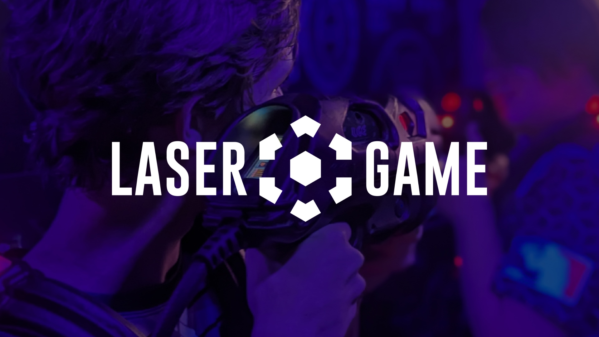
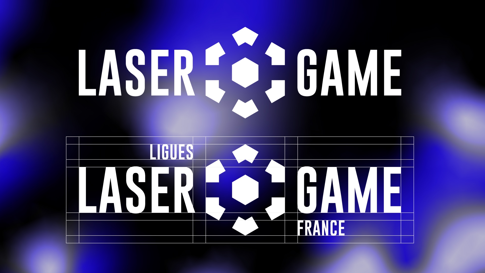
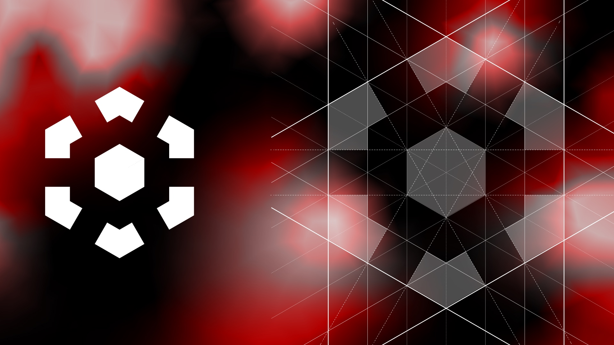
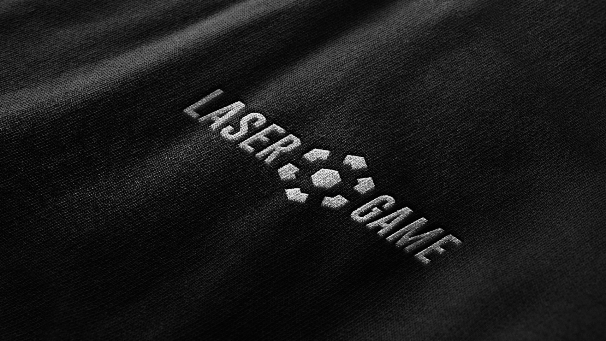

<h2>Logos</h3>

    <div class="gallery">
        <h3>Logo des ligues de Laser Game</h3>
        <p style="padding-bottom: 12px;">Ce logo est basé sur la forme des cibles lumineuses des gilets utilisés pour jouer. Il symbolise l'ovjectif des joueurs et ainsi regroupe tous les joueurs sous le même symbole.</p>
        <div class="col">
            
            
            
            
        </div>
    </div>
    